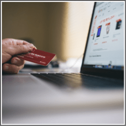

Do Shopping, What?
You might be shocked for a moment after reading the title. You must be thinking how can I make money while shopping?
To answer your question is by visiting the following sites.
Most of the sites listed below will give you a percentage or a flat rate in cash back for purchasing certain items.
For e.g. If you want to buy a pack of Oreo biscuits, go to any of the below-mentioned sites and if there's any offer going on Oreo biscuits.
Let's say you found an offer which gives you $2 cashback on every purchased pack then clicking on the offer and buying the biscuit pack you earn your $2.
Here’s the list of reputed sites: